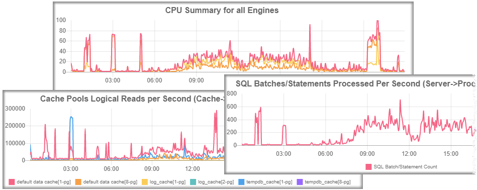

DbxTune - Central
View Trends Graphs for all your Database Systems in one place!

Support for: Sybase/SAP: ASE, IQ, RS, RAX, MS SQL-Server, Postgres, MySQL, DB2, Oracle, SAP HANA
View charts » 0 Active Alams, in 0 Servers. 0 seconds ago. Click here to refresh every 60 seconds Quick access list Quick access list (show all available graphs) Profiles